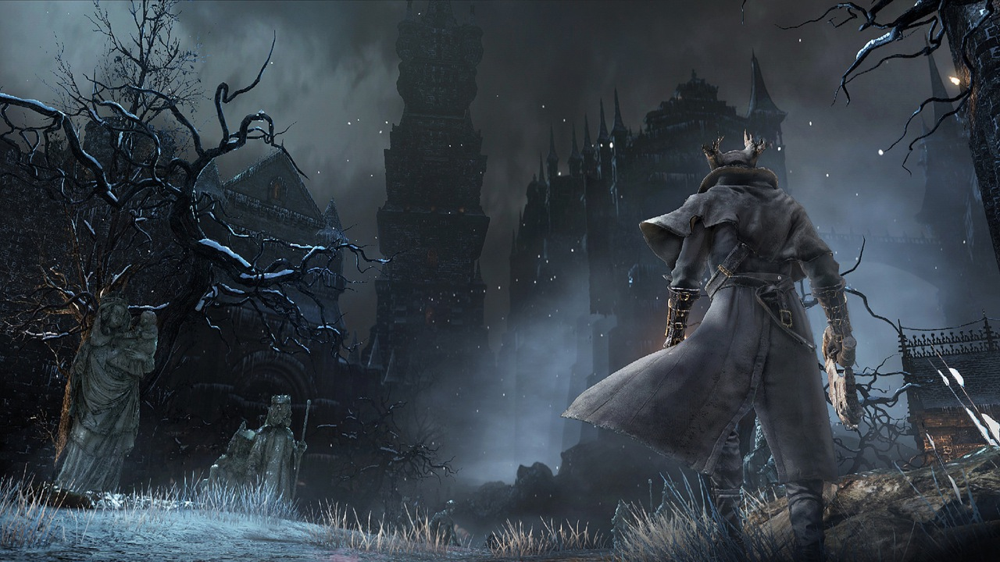
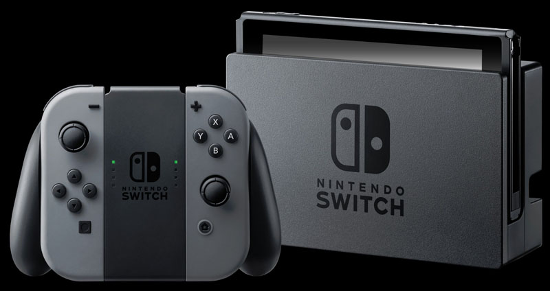

The definitive and 100% correct list of top 5 Playstation 4 games!
5. Overwatch
Overwatch is a team based first person shooter by Blizzard. In Overwatch players select from a number of heroes, each with unique skills and abilities, to form teams that compete online in a number of game modes. Overwatch is a great game because the characters are expertly designed and balanced. There is also a ton of replay-ability with Overwatch because there are so many heroes to master!
4. Resogun
Resogun is a side scrolling shoot 'em up by Housemarque. Resogun was a Playstation 4 launch game and was free for members of Playstation Plus. Resogun is a fun score based game that is inspired by classic arcade games. Chaining together combos in Resogun helps to increase your multiplier and increase your score. Resogun did a fantastic job of showing off the power of the PS4 with the beautiful art style and voxel based explosions.

3. Uncharted 4
5 years after our last adventure with Nathan Drake, developer Naughty Dog brought us back to that world for one last adventure in Uncharted 4. Uncharted 4 brings back classic characters from the series, Nathan Drake, his wife Elena, and grizzled mentor Sully. The series also introduces us to Drake's brother Sam. The crew goes on a wild adventure to locate Captain Henry Avery's long lost treasure. Naughty Dog continues to show why they are a world class developer by creating a game that pushed the Playstation 4 to it's graphic limits.

2. Bloodborne
Bloodborne is dark. It is gloomy It is punishing. One false move and the player will be ambushed by a swarm of horrific creatures, and lose all the recent experience they had worked so hard to gain. It is also an absolute blast to play and the feeling of accomplishment when you defeat a boss and make it back to the save point to level up is amazing. The weapon design and combat are truly first class. Developer From Software took a number of gameplay mechanics from the famous Dark Souls franchise and brought them into a beautifully dark Lovecraftian world.
1. Horizon Zero Dawn
Horizon Zero Dawn is an open world action game in a post-post-apocolytic world with Robot dinosaurs! Horizon does an excellent job of combining top notch story telling, gameplay, and graphics. Players in Horizon set off on an adventure to learn about the main character's origin. How fun does hunting down robot dinosaurs sound? It is better than that! Armed with an arsenal of mechanical bows and arrows, the game gives the play a number of unique ways to take down these mighty beasts. Graphically Horizon is the best looking game on the console.

What's next?
If you liked this list, check out the completely objective Top 5 Nintendo Switch games! Number 3 will shock you!
